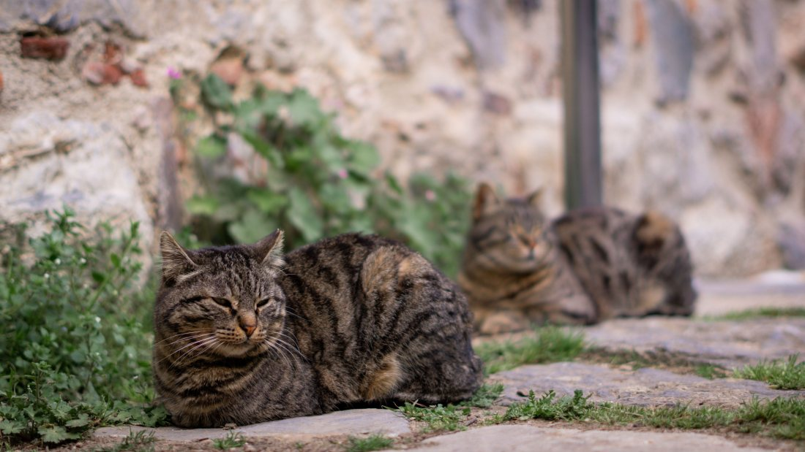
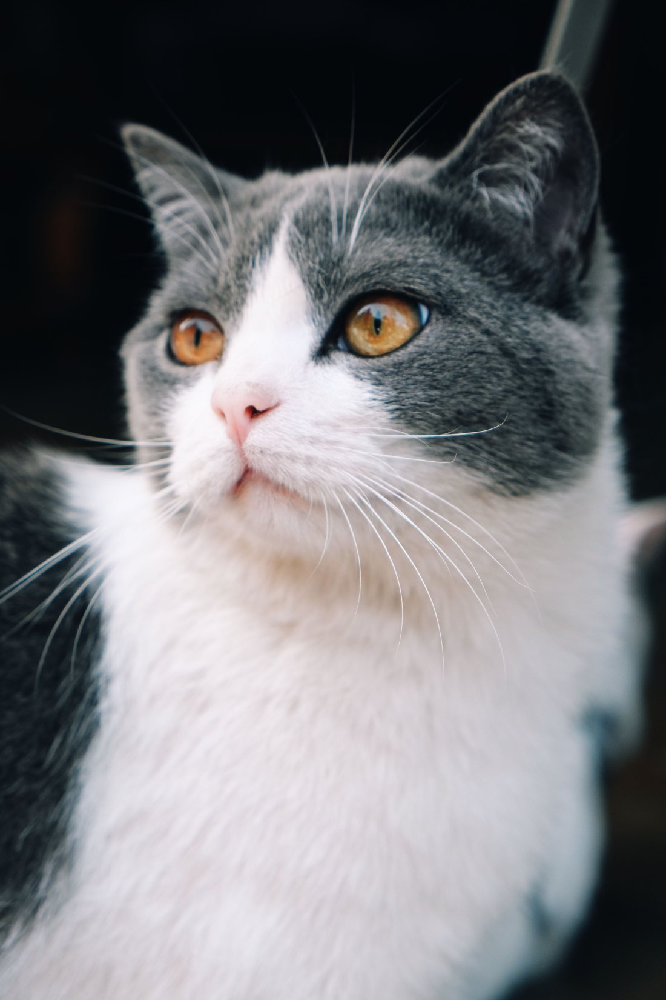
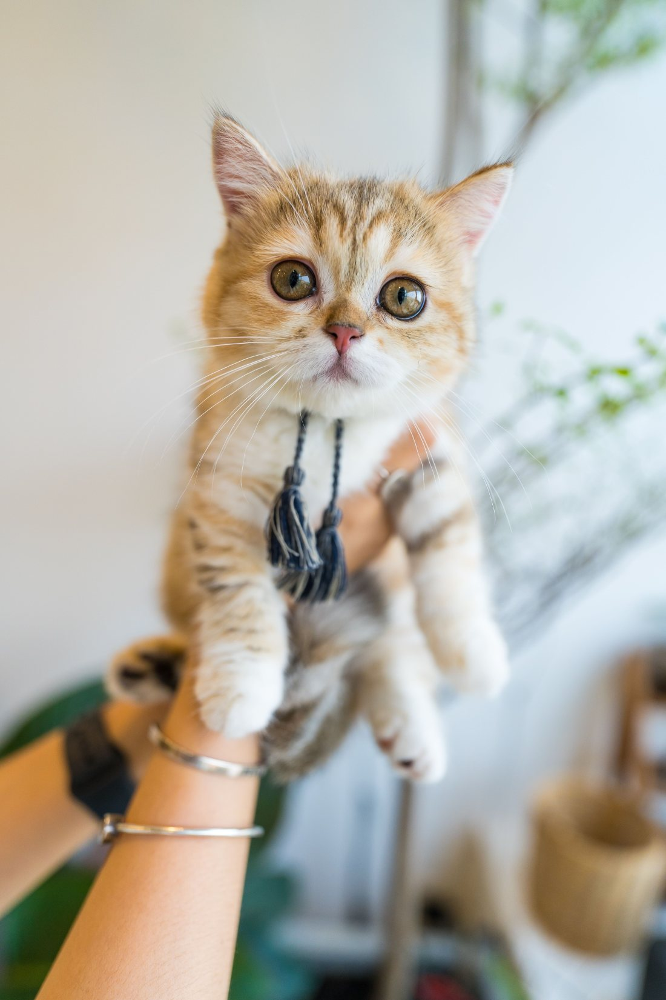

Veterinaria · Valdivia
¿Cómo lo llevo
sin que nos
odiemos?
El gato ve la caja y desaparece. Media hora después hay arañazos, alguien llorando y una hora perdida. Por eso los gatos van menos al veterinario que los perros — y por eso llegan más tarde cuando algo pasa.
- reseñas en Google
- 199
- teléfono
- (63) 243 0902
Escena 01
Días antes
Todo el problema empieza acá: la caja aparece una vez al año y siempre termina en el mismo lugar. El gato hizo la conexión hace tiempo, y es mucho más rápido que uno.
- Sacar la caja tres o cuatro días antes y dejarla abierta en el living, como un mueble más.
- Ponerle adentro una manta con olor a casa, y de vez en cuando algo rico.
- No cerrarla nunca durante esos días. Ni una sola vez: la idea es que deje de significar «viaje».
Suena exagerado para una consulta de veinte minutos. Es la diferencia entre un gato que entra caminando y uno que hay que sacar de abajo de la cama.
Escena 02
La toalla
Si igual hay que agarrarlo, la toalla es la herramienta. No para envolverlo a la fuerza: para tapar y contener sin apretar.
- Una toalla grande, mejor si ya tiene olor de la casa.
- Cubrirlo por encima —la vista tapada baja la mitad del estrés— y levantarlo con el peso repartido, nunca del cogote.
- Si el gato está muy alterado, parar. Un gato con las orejas atrás y la cola gruesa no se convence: se espera.
Escena 03
La entrada
Acá está el truco que casi nadie conoce y que cambia todo el asunto.
- De espalda, y hacia abajo. Con una caja que se abre por arriba, se baja al gato de cola primero, sentado — no de frente por la puerta chica.
- Si la caja sólo se abre de frente, se para de pie sobre la parte de atrás y se baja al gato adentro por gravedad.
- Una caja que se abre por arriba o que se desarma en dos mitades vale cada peso que cuesta. falta: si venden o recomiendan alguna
Un gato empujado de frente saca las cuatro patas y se traba en el marco. Bajado de espalda, no tiene de dónde afirmarse — y entra sin pelear.
Escena 04
El auto
El viaje es la parte que más ansiedad genera y la más fácil de arreglar.
- Un paño encima de la caja. Que no vea pasar el mundo por la ventana baja el estrés de forma notoria.
- La caja asegurada, en el suelo del asiento trasero o con el cinturón. Nunca suelta en el asiento y nunca en las rodillas de alguien.
- Sin radio fuerte y sin abrir la caja en el camino «para calmarlo»: es exactamente cuando se arranca.
Escena 05
La llegada
Y en la sala de espera, lo último que queda por cuidar.
- La caja en alto, sobre las piernas o una silla, nunca en el suelo: desde abajo todo es más amenazante.
- El paño encima hasta que entren a la consulta.
- Y no abrirla en la sala. Se abre adentro, con la puerta cerrada.
Nada de esto es un tratamiento ni reemplaza nada. Es la manera de trasladar un gato, que es del oficio y la sabe cualquier veterinario — sólo que nadie la escribe. falta: que la clínica revise y firme la maniobra
Lo que cambia en la sala de espera
Un gato no espera igual que un perro
Cinco perros ladrando al lado son media hora de estrés que llega hasta la mesa de consulta. Por eso las clínicas que atienden bien a los gatos separan la espera, bajan la voz y dejan la caja en alto: no es delicadeza, es que un gato asustado no se deja revisar, y una revisión a medias no sirve para nada.
La otra mitad del problema
La consulta
amiga del gato
El dueño puede hacer todo bien y perderlo en la sala de espera, con tres perros ladrando a un metro. Lo que la clínica puede ofrecer del otro lado es tan importante como la maniobra de la casa.
- Si hay un rincón o una hora sin perros
- falta: confirmar No hace falta una sala aparte: un rincón, un biombo, o simplemente decir «los gatos a primera hora» ya resuelve la mayor parte.
- Si se puede esperar en el auto y entrar directo
- falta Es la solución más simple del mundo y la que más agradecen los dueños de gatos. Sólo hay que avisar que existe.
- Si se examina dentro de la caja cuando se puede
- falta Con la mitad de arriba retirada, muchos gatos se dejan revisar sin salir. Es manejo, no equipamiento.
- Cuánto dura una consulta de gato
- falta Si toma más que la de un perro porque se le da tiempo, decirlo es una ventaja, no una disculpa.
Cuatro respuestas cortas y una maniobra escrita. Con eso, esta clínica pasa a ser la de los gatos en Valdivia — y esa etiqueta, en un pueblo grande, se instala sola.
Meterlo a la caja no tiene que ser una guerra
Y si lo es, la consulta empieza perdida
Para pedir hora para un gato
(63) 243 0902
Es el número publicado en su ficha de Google.


